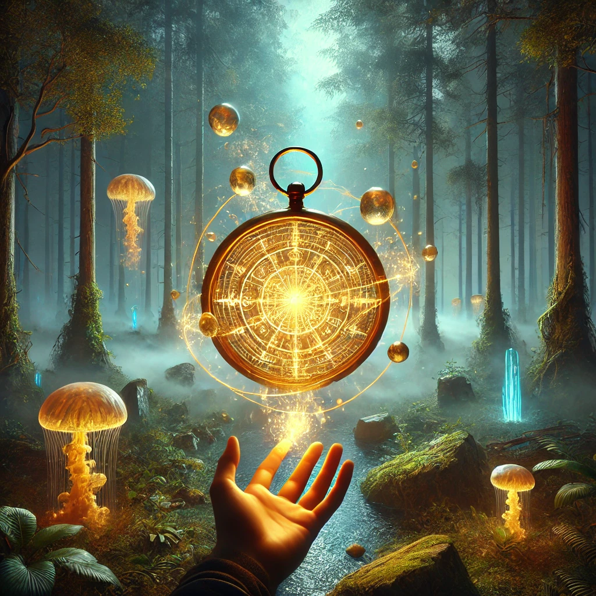

You thank the shaman for their guidance and rise, holding the golden compass tightly in your hands. It pulses softly, pulling you further into the unknown. The forest grows denser, shadows deepening as you press forward. The compass glows brighter, its glyphs shifting and swirling like liquid light.
As the compass leads you deeper into the mist, the air becomes charged with an electric hum. Suddenly, the trees part, revealing a strange landscape—floating stones, glowing plants, and a river of shimmering light that seems to defy gravity.
“The path continues,” whispers a voice from the compass. “But each step demands a choice. Will you follow the flow, or shape it?”

What do you do?